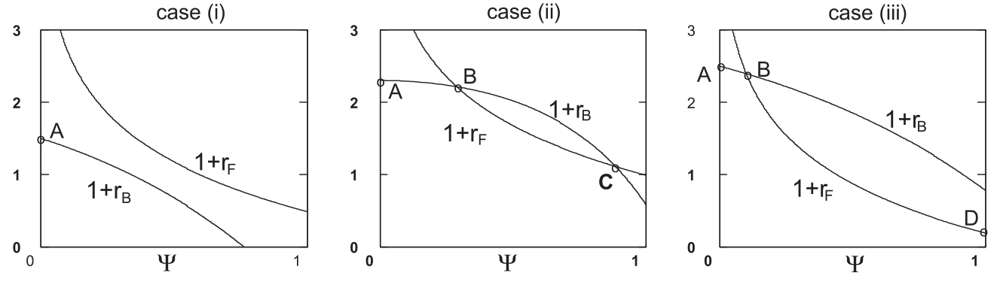
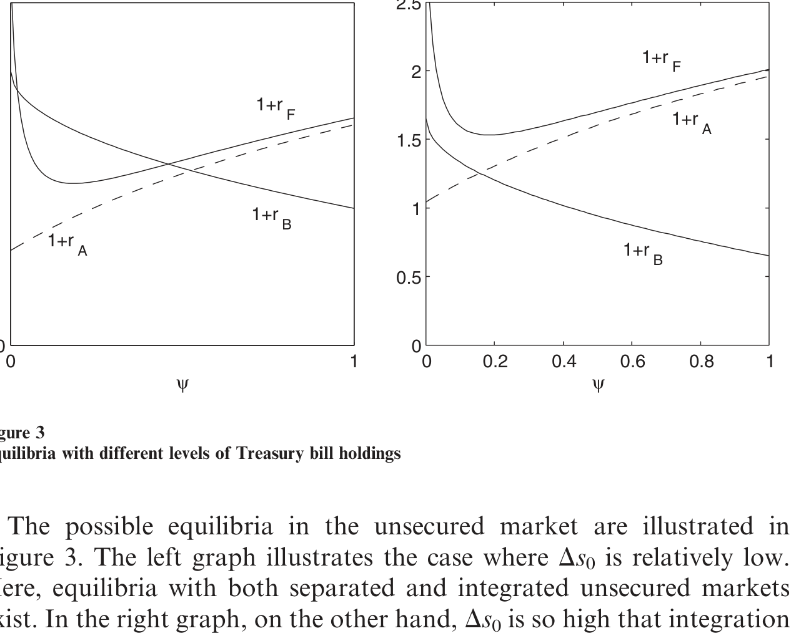
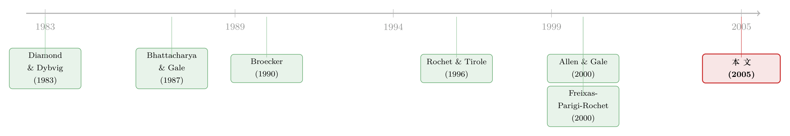

同一种货币，未必是同一个市场——一道写在「跨境信息」里的银行间难题
本文读的是 Freixas & Holthausen (2005, Review of Financial Studies)：当跨境信息比本国信息更「模糊」时，一个统一货币区里的无担保银行间市场未必会整合成一个市场——分割（segmentation）永远是一个均衡，而整合（integration）只在跨境信息足够清晰时才可能出现；而且整合未必更有效率。引入回购（repo）市场能压低利差、改善分割，却可能反手摧毁那个本就脆弱的无担保整合均衡。
1 引言：同一种货币，未必是同一个市场
先抛一个看似已经过时、其实从未真正解决的问题：欧元区已经用了一种货币，为什么跨国的银行间拆借利率，还是会长期存在差异？
按教科书的直觉，一旦没有了汇率、没有了资本管制、没有了清算上的法律障碍，钱就该像水一样在各国银行之间自由流动，把利率拉平。可现实里，跨境的银行借贷一直带着一层挥之不去的摩擦。更极端的例子是东亚金融危机：当时一个运转良好的无担保银行间市场说崩就崩，外国银行的拆借在这些国家的融资结构里曾经举足轻重，抽身之快，几乎成了危机本身的一部分。
Freixas 和 Holthausen 想把这层摩擦讲清楚。他们的答案不在汇率，也不在管制，而在一个更隐蔽的地方：信息。具体说，是一种「软信息（soft information）」的不可携带性——一家银行的衍生品到底是在对冲还是在投机、它的拨备里藏了多少水分、市场上关于它的流言、它出事时会不会被救……这些东西本国同行心知肚明，跨境却几乎读不准。
注意作者反复强调的一点：他们说的不是硬信息（hard information）。一张外国银行的资产负债表，拿到手跟本国的一样容易。问题在于解读资产负债表所依赖的「文化语境」无法出口。这也顺带解释了一个老现象——为什么那么多成本上更高效的外国银行，挤进别国市场却屡屡折戟。
于是论文的贡献被压缩成一句很反直觉的话：有了单一货币，并不等于有了单一的无担保银行间市场。
2 一个核心：敲外国银行门的，到底是谁？
整篇文章我愿意只围绕一个机制反复讲透，因为其余所有结论都是从它身上长出来的。这个机制是一道逆向选择（adverse selection）：
当一家银行跑去向外国银行借钱，它出现在那里，本身就是一条坏消息。
为什么？设想每家银行在时点 1 会同时收到两个信号：本国信号 sD 和外国信号 sF，各自只有「好（s̄）」和「坏（s）」两种。这样每家银行就被刻画成一个信号对 (sD, sF)，一共四类：(s̄,s̄)、(s̄,s)、(s,s̄)、(s,s)。
接着，一个自然的问题是：谁有资格、又有动机去外国市场借钱？
(s,s)：里外都是坏信号，谁也不借给它，出局。(s̄,s)：本国好、外国坏。它只能在本国借——因为外国看到的是坏信号，必然拒绝。(s,s̄)：本国坏、外国好。它在本国借不到，只能去外国借。(s̄,s̄)：里外都好。只有这一类真正自由，可以选在哪国借。
然后——这就是关键的一步——站在外国放贷人的角度看，门外排队的「外国借款人」其实是两拨人的混合：一拨是被本国拒之门外、迫不得已出海的 (s,s̄)（这些是高风险的「次品」），另一拨是因为外国利率更划算而主动出海的好银行 (s̄,s̄)。外国放贷人看不出眼前这家具体是哪一类，他只能观察到「有多少比例的银行选择出海」，据此更新出一个外国借款池的存活概率 pF。
于是逆向选择的逻辑闭合了：好银行出海越少，池子越「脏」，pF 越低，外国放贷人要价越高；要价越高，越没有好银行愿意出海……这正是经典柠檬市场的味道（关于「先卖给中间商」如何反过来治好柠檬市场，可参见《承诺去交易：为什么「先卖给中间商」反而能治好柠檬市场》）。
把这条暗线抓住，后面的多重均衡、repo 的双刃剑，都只是它的推论。
3 模型设定：一个 Diamond–Dybvig 的两国版本
模型骨架借自 Diamond and Dybvig (1983)。两个国家，各有测度为 1 的连续统消费者，时点 0 每人持有 1 单位禀赋，存进银行；他们或在时点 1、或在时点 2 消费。存款由存款保险全额担保，因此不会发生银行挤兑——这一点很要紧，它把「挤兑」从模型里剔掉，让所有银行倒闭都只来自流动性冲击。
银行是风险中性的，把存款投到三处：风险技术 I、国债 TB（价格 B0、时点 2 确定兑付 1）、以及储备 s0 = 1 − I0 − TB0。风险技术的回报是
$$\tilde{R} = \begin{cases} R & \text{with prob } p \quad (\text{solvency})\\[2pt] 0 & \text{with prob } 1-p \quad (\text{insolvency})\end{cases}$$
并假设 pR > 1（事前有效率）。时点 1 可部分清算，清算函数取对数形式 l(ΔI) = ln(ΔI + 1)，递增且凹。
信号结构才是全文的发动机。时点 1，本国信号的精度由 a 刻画：
$$\text{prob}(s_D=\bar{s}\mid \tilde{R}=R)=\text{prob}(s_D=s\mid \tilde{R}=0)=a,\qquad a\in(\tfrac{1}{2},1].$$
记好信号的事前概率 u ≡ pa + (1−p)(1−a)，于是条件存活概率分别是
$$\bar{p}\equiv \text{prob}(\tilde{R}=R\mid s_D=\bar{s})=\frac{pa}{u},\qquad \underline{p}\equiv \text{prob}(\tilde{R}=R\mid s_D=s)=\frac{p(1-a)}{1-u}.$$
跨境信息的「模糊」由 Assumption 1 给出：
$$\text{prob}(s_F=\bar{s}\mid s_D=\bar{s})=\text{prob}(s_F=s\mid s_D=s)=1-b,\qquad b\in(0,\tfrac{1}{2}).$$
b 就是「本国信号在外国被读错」的概率。b 越小，跨境信息流越通畅。 当 b → 0，跨境与本国信息无异，整合应当无碍；b 越大，外国那只眼睛越花。这一个参数，几乎牵动全文所有比较静态。
Assumption 2 则保证「坏信号银行该关就关」：prob(R̃=R | sF=s)·R ≤ l'(I)，即对一家在外国收到坏信号的银行，全额清算其风险资产是有效率的。
4 识别均衡：整合，还是分割？
有了上面的零件，作者把均衡定义在一个变量上：c，即有选择权的 (s̄,s̄) 银行中，选择出海借钱的比例。
整合（integration） 定义为 c* > 0；分割（segmentation） 定义为 c* = 0。整篇分析，就是去解这个 c*。
第一步是确定资金流向。Lemma 2 证明：超额流动性国家 A 的银行只在本国借（cA = 0），且分割时 B 国利率高于 A 国（rA < rB）。直觉很顺——钱总是从高息、缺流动性的 B 国，单向流向低息、有余钱的 A 国。这样四个市场塌缩成三个，只剩下「B 国银行去 A 国借」这一个跨境市场，记其利率为 rF、出海比例为 c。
真正关键的一步在于刻画一个内点整合均衡（0 < c* < 1）要同时满足的两个条件。其一，A 国的放贷人对「贷给本国」还是「贷给外国池子」必须无差异：
其二，那些本国、外国都能借的 (s̄,s̄) 银行，对在哪借必须无差异：
$$r_B = r_F. \tag{4}$$
（当 c* = 1 的角点解时，(4) 退化为不等式 rB ≥ rF。）剩下两条市场出清条件，每国一条：
$$V_A - L_A = 0,\qquad V_B - L_B = 0. \tag{5,6}$$
把 (3) 解出 rF 关于 rA 的关系，再用 (5)、(6) 定出 rA、rB，整个均衡就闭合了。
这里有一处特别值得停下来体会的不对称。看式 (3)：pF(c) < p̄，因为外国池子里掺了被本国拒掉的 (s,s̄) 次品。要让等式成立，就必须 rF > rA——外国借款人天然要多付一段「信息租金（informational rent）」。 Lemma 3 进一步说，pF(c) 随 c 递增、而溢价 rF(c) − rA(c) 随 c 递减：出海的好银行越多，池子越干净，溢价越薄。这又是一条向自身反馈的曲线，正是多重均衡的温床。
于是反转出现了：分割（c* = 0）永远是一个均衡。 因为如果没有任何好银行出海，外国放贷人面对的就只剩纯次品，他干脆把利率抬到没人愿意来——预期自我实现。而整合均衡（c* > 0）只有当跨境信息足够好（b 足够小）、那道逆向选择的楔子足够薄时，才可能存在；它甚至可能与分割均衡同时存在，经济落在哪个均衡，取决于预期的协调。论文用一张参数图把这件事画了出来。

Figure 2: illustrates under which circumstances an equilibrium with
还有一个不留情面的结论：即便整合出现，也只是部分整合。 只要 b > 0，跨境信息里就有噪声，B 国放贷人因此从流动性紧张中赚到一份信息租金；而 A 国放贷银行所融资的，是一个混杂人群——所有 (s,s̄) 高风险银行，外加比例 c 的低风险 (s̄,s̄)。这也直接回答了开头的谜题：跨境利差不是因为有人没把市场建起来，而是信息摩擦让「拉平利率」这件事在均衡里就做不到。
把「整合的崩溃」读成「金融危机」是诱人的，但要克制。作者明说本文不聚焦危机；他们只是指出，从整合滑向分割，在数学上是一次均衡切换。东亚的故事是个生动的注脚，不是模型的内生结论。
5 repo 市场的双刃剑
接着，一个更现实的问题是：如果允许银行用国债做回购（repo），把缺流动性的资金缺口用有担保的方式补上，会不会更好？
直觉上 repo 是个完美的渠道：它有抵押品兜底，能在银行间、国家间顺畅地调拨流动性，因此能压低利差、改善那个糟糕的分割均衡。这一半的故事确实成立。
但真正关键的一步在于：担保恰恰削弱了同业监督的动机。 无担保市场之所以有价值，是因为放贷人要承担对手违约的损失，于是有激励去「盯」对手——这正是 Calomiris and Kahn (1991) 笔下可随时索回的债务所扮演的市场纪律角色。而 repo 把这份激励抽走了：有了抵押品，放贷人不在乎对手是死是活。结果，那些本该被清算（清算价值高于其继续经营的期望价值）的低存活概率银行，也能从 repo 市场拿到流动性、逃过清算。
于是出现了那个令作者自己都用「surprisingly」来形容的结论：把无担保市场和 repo 市场放在一起，未必更有效率——因为 repo 的存在可能反手摧毁无担保的整合均衡。 担保削弱了监督，等于抽掉了无担保市场赖以维系的那根纪律之绳，把原本愿意出海、愿意被甄别的好银行也赶走了。论文用 Ds 等需求参数刻画了这种此消彼长。

Figure 3: The left graph illustrates the case where Ds is relatively low
这条「有担保 vs 无担保」的张力，与信贷市场里把抵押品当作筛选工具的研究遥相呼应（可参见《抵押品的两副面孔：当银行同时用「利率」和「担保」给你做体检》）。只是这里的结论更冷峻：抵押品在改善一处的同时，悄悄拆掉了另一处的信息生产。
6 文献脉络
把这篇论文放回它生长的那条线上，脉络就清楚了。
源头是 Bhattacharya and Gale (1987)：他们第一次正式指出，银行间市场的作用，是帮银行应对各自的流动性冲击、避免无谓地清算长期投资。这之后，这条线沿着不同的摩擦各自展开——Rochet and Tirole (1996) 引入了「同业监督（peer monitoring）」与道德风险，把银行间市场为何能起纪律作用讲清楚；Allen and Gale (2000) 引入加总流动性风险，关心传染；Freixas, Parigi, and Rochet (2000) 则把信用风险与系统性风险接上。Bhattacharya and Fulghieri (1994)、Holmström and Tirole (1998) 又分别从不确定的流动性回报时点、公共部门的流动性供给两个角度补充。

本文的位置很明确：它接过 Rochet and Tirole 的「同业监督」，但把关心的重心从「如何用道德风险约束借款人」挪到了「信号的质量」上——而且这里信号的价值是内生的，由借款人的均衡行为决定，而非像 Broecker (1990)、Flannery (1996) 那样外生给定。再叠上一层跨境信息更噪的设定，本文就成了把「信息不对称」与「市场整合」缝在一起的那一针。它与近年那些追问「外国投资者究竟有没有信息劣势」的实证研究，正好构成理论与证据的两端（可参见《外资真有「信息劣势」吗？——首尔交易簿里那 37 个基点的真相》）。而「银行明明没有信息优势却照样活着」这一更普遍的中介之谜，则有《一座连接乐观与悲观的「信念之桥」》从另一个角度作答。
评论与延伸（Q&A + 研究方向）
(a) 几个可能的疑问
Q：为什么说「分割永远是一个均衡」，这是不是太强了？
不是技术上的强行设定，而是预期自我实现的结果。若没有任何好银行出海，外国放贷人面对的池子就是纯次品，把利率抬到劝退所有人是他的最优反应；而没人来，又坐实了「出海的都是次品」的预期。这是一个标准的逆向选择型坏均衡，所以它总是存在；真正稀缺的是好均衡（整合）。
Q：本文的「整合崩溃」能等同于金融危机吗？
不能直接画等号。作者本人就刻意保持距离：模型里没有挤兑（存款全额保险），整合到分割只是均衡切换，不是动态崩盘。东亚的例子是动机性的类比，提醒你这种切换在现实中代价巨大，但模型并不内生地产出一场危机。
Q：repo 既然能压利差、改善分割，为什么反而是坏事？
因为效率不是只看利差。repo 的抵押品让放贷人不再关心对手死活，同业监督的激励被抽走，于是该被清算的低质量银行也能续命，社会为此承担了「本可避免的清算损失被避免」之外的另一笔账。更糟的是，它可能把无担保整合均衡一并拆掉——两个市场之和，未必大于无担保市场单独的价值。
Q：信号 sD 是「软信息」，那直接让外国银行去买财报、做尽调不就行了？
作者的关键限定正在于此：假设作用在软信息上，而非硬信息。财报谁都拿得到，但解读财报依赖不可出口的「文化语境」——监管默许多少粉饰、出事会不会被救、流言可不可信。这些跨境读不准，且并非花钱就能补齐，所以
b > 0不是懒，是结构性的。
Q：为什么外国借款人一定要多付利息（rF > rA）？
看式 (3)。外国池子里掺了被本国拒掉的
(s,s̄)次品，其存活概率pF(c) < p̄。要让 A 国放贷人对内外无差异，就必须用更高的rF补偿更低的回收率。这段差价就是跨境信息噪声给外国借款人贴上的「信息租金」，且会随出海好银行增多而变薄。
Q：模型假设银行观察不到自己的存活概率，只看得到信号，这合理吗？
这是为了把额外的道德风险问题挡在门外的一个简化。一旦银行对自身解决方案有私有信息，就会冒出新的逆向选择层次，模糊掉本文想突出的「跨境信号噪声」这条主线。代价是牺牲了一些现实性，收益是机制干净。
(b) 几个可能的研究问题与提案
1. 跨境信息噪声 b 的实证代理与利差。
【经济故事】本文的核心比较静态是「b 越大、整合越难、跨境利差越宽」。能否找到一个对 b 的可信代理（共同语言、共同监管框架、会计准则趋同、跨境银行并购历史），看它是否预测欧元区内跨国拆借利差与跨境敞口？
【可行性】中。数据可得（欧元区 MMSR、TARGET2、BIS 跨境银行统计），难点在 b 的外生性——准则趋同、监管一体化往往与利率环境同时变动，需要找制度变更（如 SSM 单一监管机制 2014 上线）这类断点做识别。
2. repo 抵押品质量与无担保市场的「挤出」。 【经济故事】本文预言 repo 可能摧毁无担保整合均衡。央行扩大合格抵押品范围、或抵押品估值规则变动，提供了天然实验：当 repo 变得更易得，无担保跨境拆借的份额与利差会如何动？ 【可行性】中到高。欧元体系合格抵押品清单的历次调整是干净的外生冲击，可与无担保隔夜市场的成交、跨境占比对接（可参照《央行的「合格清单」：一只债券一旦能抵押，会发生什么？》的设计思路）。
3. 把机制搬到公司债的「外资持有人」语境。
【经济故事】本文的逆向选择——「出现在外国市场本身就是坏消息」——能否平移到公司债一级市场：当一家发行人转向海外投资者发债，是否被解读为它在本国市场遇冷？外资持有人是否因此要求更高的信息溢价？
【可行性】中。需要发行人层面的投资者地理分布（如承销簿、TRACE 配合 13F/持有人国别），识别上要区分「主动出海定价更优」与「被本国挤出」两类动机，与本文 (s̄,s̄) 对 (s,s̄) 的区分一一对应。
4. 多重均衡的协调与「预期冲击」。 【经济故事】分割与整合可以并存，落在哪个取决于预期协调。能否用一次明确的协调事件（如统一货币启动、跨境支付系统并网）作为「均衡选择」的外生推动，识别整合是否被一次性地「跳」了过去？ 【可行性】低到中。多重均衡的实证识别本就困难，最大障碍是把「均衡切换」与基本面渐变区分开；需要高频、清晰的事件窗口与反事实，诚实地说，干净识别很难。
参考文献
- Allen, F., and D. Gale (2000). Financial Contagion. Journal of Political Economy 108(1), 1–33.
- Bhattacharya, S., and P. Fulghieri (1994). Uncertain Liquidity and Interbank Contracting. Economics Letters 44, 287–294.
- Bhattacharya, S., and D. Gale (1987). Preference Shocks, Liquidity, and Central Bank Policy. In W. Barnett and K. Singleton (eds.), New Approaches to Monetary Economics, Cambridge University Press.
- Broecker, T. (1990). Credit-Worthiness Tests and Interbank Competition. Econometrica 58(2), 429–452.
- Calomiris, C., and C. Kahn (1991). The Role of Demandable Debt in Structuring Optimal Banking Arrangements. American Economic Review 81(3), 497–513.
- Diamond, D., and P. Dybvig (1983). Bank Runs, Deposit Insurance, and Liquidity. Journal of Political Economy 91(3), 401–419.
- Flannery, M. (1996). Financial Crises, Payment System Problems and Discount Window Lending. Journal of Money, Credit and Banking 28(4, pt.2), 804–824.
- Freixas, X., B. Parigi, and J. C. Rochet (2000). Systemic Risk, Interbank Relations, and Liquidity Provision by the Central Bank. Journal of Money, Credit and Banking 32(3, pt.2), 611–638.
- Freixas, X., and C. Holthausen (2005). Interbank Market Integration under Asymmetric Information. Review of Financial Studies 18(2), 459–490.
- Holmström, B., and J. Tirole (1998). Private and Public Supply of Liquidity. Journal of Political Economy 106(1), 1–40.
- Rochet, J. C., and J. Tirole (1996). Interbank Lending and Systemic Risk. Journal of Money, Credit and Banking 28(4, pt.2), 733–762.